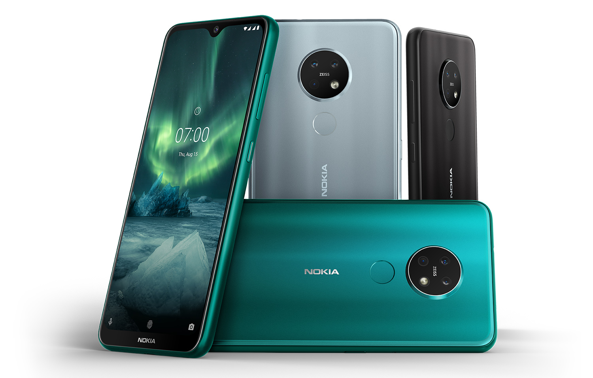

|
|
 |
|---|
Para la empresa que comercializa teléfonos móviles marca Nokia desde 2016, véase HMD Global. Nokia Tipo conglomerado, multinacional, empresa tecnológica, empresa de capital abierto ISIN FI0009000681 Industria aparato de comunicación teléfono móvil red de computadoras aparato eléctrico sector de telecomunicaciones Clasificación Internacional Industrial Uniforme hardware de red industria eléctrica Forma legal julkinen osakeyhtiö Fundación 12 de mayo de 1865 (159 años) Fundador Fredrik Idestam Leo Mechelin Sede central Bandera de Finlandia Espoo, Finlandia Presidente Sari Baldauf Productos Sistema global para las comunicaciones móviles software casco telefónico teléfono inteligente Ingresos Decrecimiento 22 991 millones de euros (2022)1 Beneficio económico −1 100 000 000 euro Beneficio neto −927 000 000 euro Activos 39 517 000 000 euros Propietario BlackRock Empleados Decrecimiento 86,689 (2023) Divisiones Nokia Networks Nokia Technologies Miembro de Fundación Linux, World Wide Web Consortium, Wi-Fi Alliance, Bluetooth Special Interest Group, ANGA, UNIFE, Electronic Book Exchange Working Group, FairSearch, Comité Europeo de Sistemas Interoperables, CCIR, Comité Consultivo Internacional Telegráfico y Telefónico e ITU Telecommunication Development Sector Filiales Bell Labs NGP Capital Nuage Networks Radio Frequency Systems Coordenadas 60°13′19″N 24°45′21″E Sitio web www.nokia.com [editar datos en Wikidata] Nokia Corporation (originalmente Nokia Oyj, denominada Nokia) es una multinacional de telecomunicaciones y tecnología con sede en el distrito de Keilaniemi, Espoo, Finlandia, presidida por Pekka Lundmark (presidente y director ejecutivo). Está integrada por dos grupos de negocios: Nokia Networks (Redes de